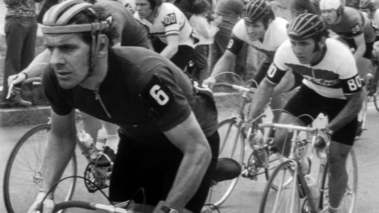

Sukcesy
Pierwszymi sukcesami było mistrzostwo Polski w kolarstwie przełajowym w Prudniku, wicemistrzostwo Polski w wyścigu górskim oraz 4. miejsce w mistrzostwach Polski w wyścigu ze startu wspólnego w 1968. Od 1969 był członkiem kadry narodowej, wtedy po raz pierwszy wystartował w Wyścigu Pokoju i od razu stanął na drugim miejscu podium . Czterokrotnie (w latach 1970, 1971, 1973 i 1975) wywalczył pierwsze miejsce w Wyścigu Pokoju. W sumie w tych zawodach przejechał 89 etapów (z czego 52 w koszulce lidera), wygrał 13 etapów, a 9 razy był drugi oraz 9 razy trzeci. Na igrzyskach olimpijskich w Monachium w 1972 i rozgrywanych cztery lata później igrzyskach w Montrealu zdobywał srebrne medale w drużynowej jeździe na czas. W 1973 zdobył na mistrzostwach świata w Barcelonie złoty medal w wyścigu ze startu wspólnego amatorów oraz drużynowej jeździe na czas. Na rozgrywanych rok później mistrzostwach świata w Montrealu zdobył srebro ze startu wspólnego. Ponadto na mistrzostwach świata w Yvoir w 1975 zdobył kolejny złoty medal w drużynowej jeździe na czas. Dziewięciokrotnie startował na mistrzostwach świata.
Pięciokrotnie został indywidualnym mistrzem Polski (w latach 1969, 1974, 1975, 1978 i 1979) w wyścigu szosowym, raz mistrzem Polski w wyścigu górskim w 1974 oraz trzykrotnie mistrzem Polski w jeździe parami w latach 1972 oraz 1975 (ze Szczepanem Klimczakiem) i 1980 (z Jerzym Kuczką). Był również dwukrotnie mistrzem Polski w wyścigu drużynowym w latach 1975 i 1976 (wraz z kolegami Janem Brzeźnym, Janem Faltynem i Szczepanem Klimczakiem), będąc zawodnikiem klubu KS „Dolmel” Wrocław. Siedmiokrotnie zdobywał tytuł wicemistrza Polski: raz w wyścigu indywidualnym w 1973 (za Stanisławem Szozdą), trzykrotnie w wyścigu górskim w latach 1968, 1975 (za Stanisławem Szozdą) i 1976 (za Janem Brzeźnym), dwukrotnie w jeździe parami w latach 1973 (wspólnie ze Szczepanem Klimczakiem) i 1978 (wspólnie z Janem Faltynem) oraz drużynowo z KS „Dolmel” Wrocław w 1973 (wspólnie ze Szczepanem Klimczakiem, Antonim Jankowskim i Januszem Kierzkowskim). Do kolekcji medali mistrzostw Polski należy dodać również 9 medali brązowych (łącznie w mistrzostwach Polski zdobył ich aż 28).
Zwyciężał także w zagranicznych wyścigach, m.in.: Circuit de la Sarthe (1969), Wielka Nagroda Annaby (1971), Dookoła Bułgarii (1971), Dookoła Szkocji (1972), Tour du Limousin (1974), Dookoła Dolnej Austrii (1977) czy Dookoła Egiptu (1979).